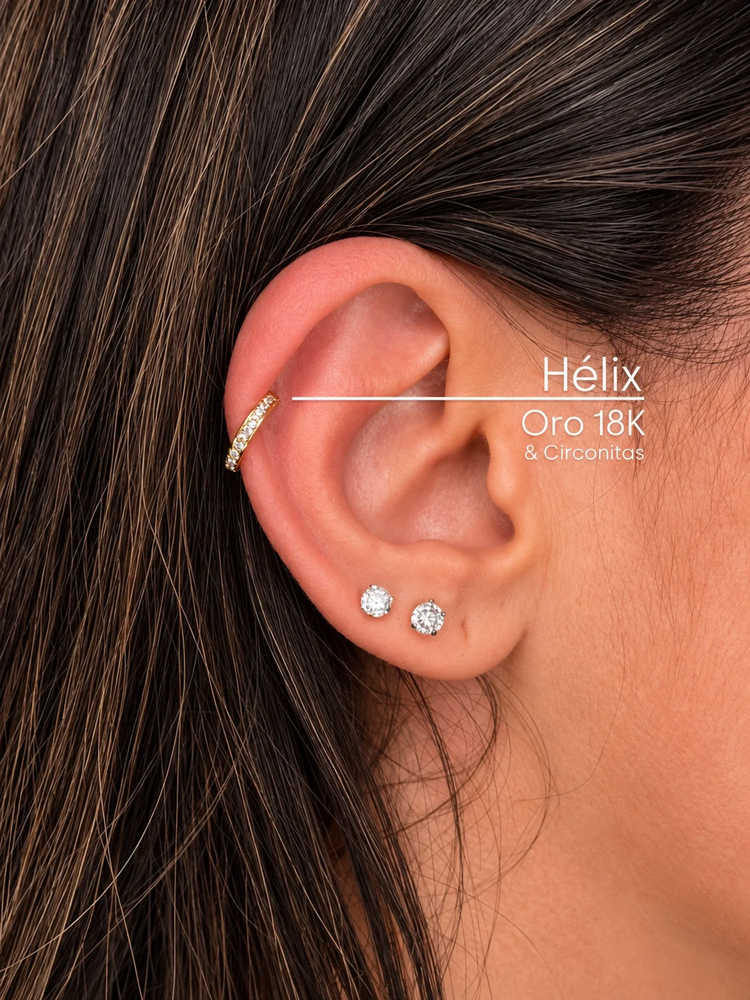
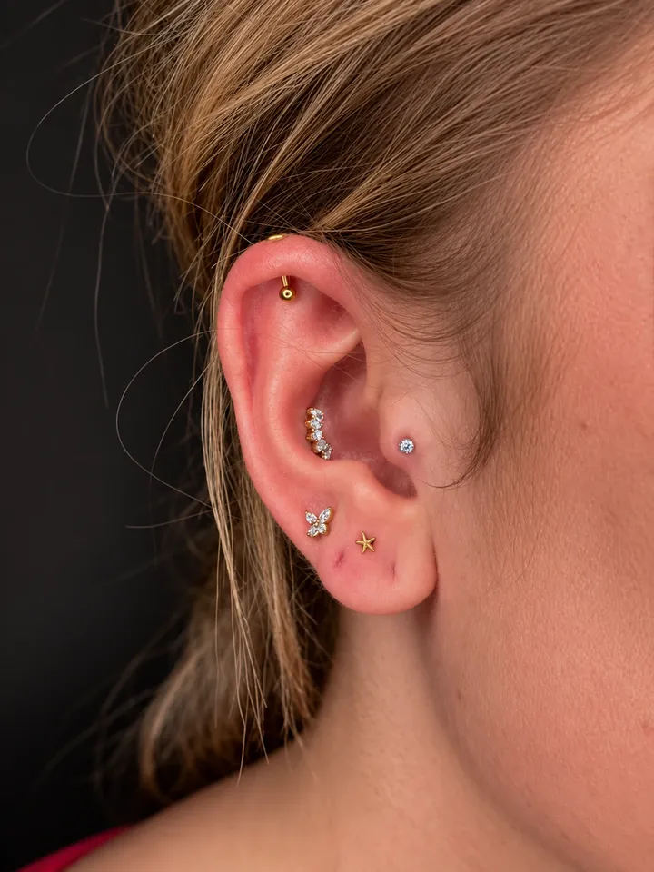
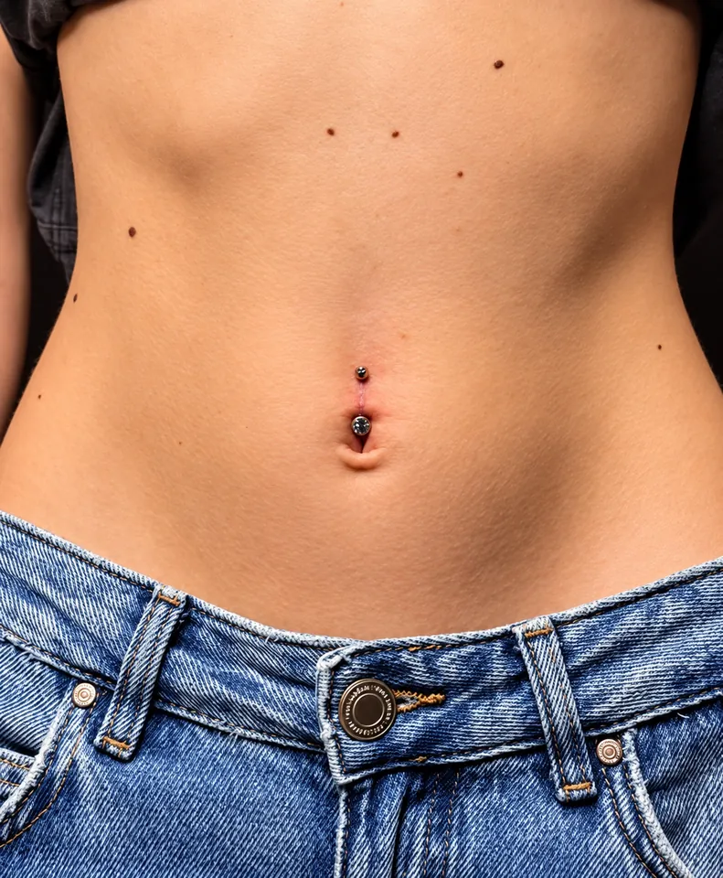
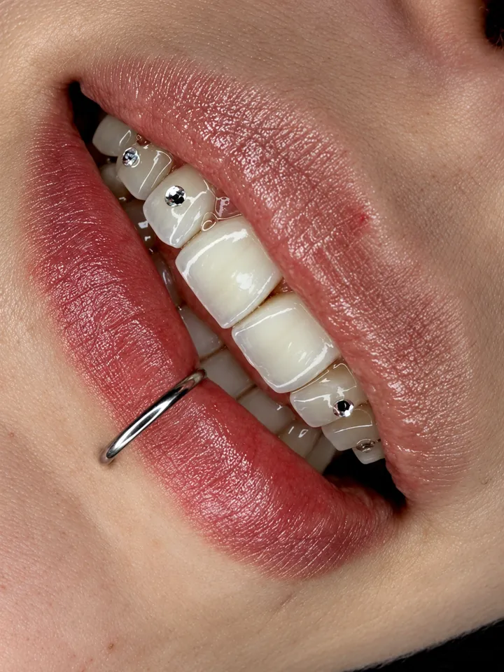
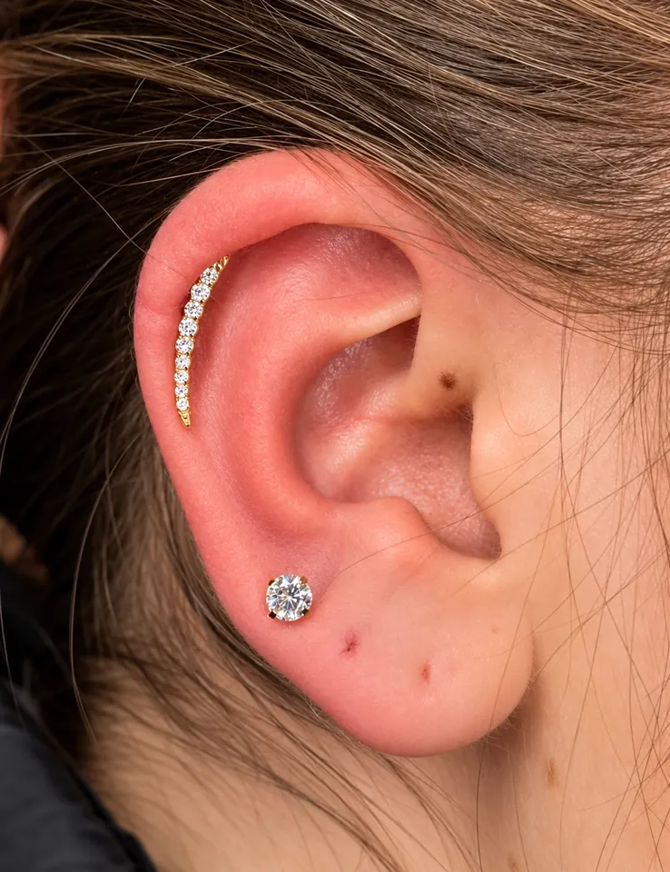
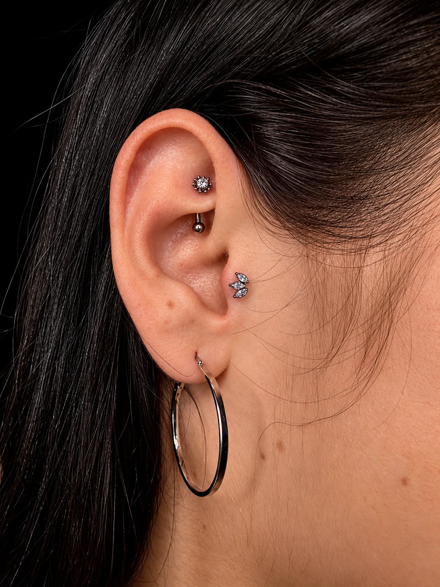

Inicio/Piercing
Body piercing
Piercing, joyería y gemas
De la primera perforación a una oreja completa: marcado, joyería fina y un seguimiento cercano de la mano de Paulix.
Servicios
Qué puedes hacerte
Estos son los trabajos que Paulix muestra en su perfil. ¿Algo distinto? Escríbenos y lo vemos.

Orejas
Lóbulo, hélix, conch, rook… Composiciones de varios puntos pensadas para tu oreja.
Ver más
Ombligo
Con marcado previo para que quede centrado y simétrico.
Ver más
Gemas dentales
Pequeñas gemas adheridas al diente, sin taladrar.
Ver más
Joyería
Piezas finas en oro 18K y otras opciones. Pregunta por el catálogo.
Ver másCómo trabajamos
Marcado previo, joyería fina
Antes de perforar, marcamos y comprobamos contigo la colocación. Luego elegimos la joya que mejor encaja con tu anatomía y tu estilo.
Material estéril
Material de un solo uso y protocolo de higiene en cada perforación.
Joyería
Piezas finas, incluyendo oro de 18K. Consulta disponibilidad.

Galería
Piercing en detalle
Cuidados
Cuida tu piercing
Pautas generales habituales. Paulix te dará instrucciones concretas para tu perforación el día de tu cita.
Limpieza diaria
¿Puedo girar o cambiar la joya?
Piscina, mar y sol
¿Cuánto tarda en cicatrizar?

Pide tu cita
Tu próximo piercing
Escríbenos con la zona que te interesa y te decimos disponibilidad y opciones de joyería.